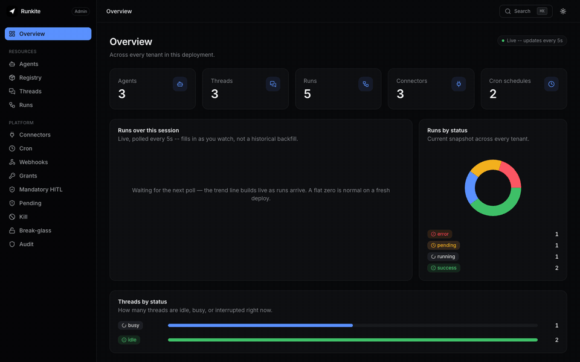

Deep
Feature map
Every Admin surface and the handbook page that explains it, so empty states and reviews never strand you.
Verified release: v0.9.0. The operator improvements below require v0.9.0 or matching source. The Trinity specialist and scripted governance walkthroughs remain checkout examples, separate from the published packages.
| Admin | Docs guide | Notes |
|---|---|---|
| Login | Admin login | Needs admin or admin_keys |
| Overview | Docs overview | Cross-tenant counts |
| Agents | Agents · Admin guide · First agent | Detail page: schema + version history |
| Try agent | Admin UI guide → Try agent | Playground; pending_agent lands in Pending |
| Registry | Registry | Publish/edit/delete in Admin; catalog, not deploy |
| Threads / Runs | Runs & threads · Run manifest · SDK integration paths | Managed runs only. App-owned decision calls do not appear here. All published managed SDK profiles create these records. Run Detail includes durable output, including structured results. |
| Connectors | Connectors · Secrets | Opt-in payload_shrink (Redis); retrieve is plane-served |
| Cron | Cron · Admin guide | Read-only; schedules from langgraph.json |
| Webhooks | Webhooks | Dead letters |
| Grants / Mandatory HITL / Pending / Audit | Grants · HITL ops · App-owned tool decisions | SQL durability. A pending decision does not prove a tool executed. |
| Kill / Break-glass | Kill & break-glass | Managed-run controls; not applied by /governance/decide |
| Spend | Spend (FinOps) | Usage and estimated USD for managed runs, SQL only. Decision-only calls are not metered or capped here. |
| No key editor | Credentials · Runner auth · Multi-tenant | No Admin CRUD for keys |
| Observability | Langfuse recipe · Trace and data boundaries · Telemetry setup | Existing OTLP exporters use HTTP protobuf for Go/Python and JSON for TypeScript when configured for Langfuse. Prometheus metrics and stdout logs remain separate; no automatic full prompt/completion capture. |
| Deployment | Production day-0 · Migrate | Enterprise path |
| Pending detail and Review approvals (v0.7.0) | Review authority | Requester, quorum, exact history and revisions; partial review remains pending |
| Credential leases (v0.7.0) | Credential lifecycle | Admin tenant selection and manual lifecycle controls; own-tenant Review reads metadata only |
| Evidence deliveries (v0.7.0) | Durable action export | Tenant/sink/status filters and evidence-only dead-letter retry |
Operator workflow (v0.9.0)
The checkout-only Trinity specialist caller also documents an external native loop invoking a Runkite-managed specialist. Source configuration and real Runkite protocol tests are qualified separately. Native Trinity execution remains unqualified; this is not a new managed runtime or upstream certification.
| Area | Existing foundation | v0.9.0 improvement and guide |
|---|---|---|
| Public MCP agent calls | Configured agents already run through /mcp; REST already accepts stable run IDs | Optional MCP operation IDs observe the same retained run after a lost response. Check discovery on the upgraded server. Retention bounds retry protection; this is not exactly-once external execution. |
| Managed approval navigation | Approval detail, review history and connector evidence already exist | Open approval record links directly to the stored ID; the run-filtered list remains secondary. Tenant Review keeps its own scope. |
| Run output | Run Detail already retains durable output and event history | Assistant answer previews supported successful text output beside raw JSON. Unsupported/structured content stays raw, and log auto-follow stays inside its viewport. |
| App-owned governance evaluation | The decision API already existed; independent Python/npm helpers first shipped in v0.8.0 | Scripted AI SDK walkthrough demonstrates real pending review and idempotent app continuation without a model account. It remains a checkout asset. Only the model response is scripted; no managed run is created. |
Current source (Unreleased)
These additions require their matching integrated checkout. Published v0.9.0 packages retain the released contract above. Start with the source integration guide; contributors should follow the engineering and qualification map.
| Source addition | Guide | Boundary |
|---|---|---|
| Structured MCP input discovery | Protocol guide | Advisory nested input schema, generic fallback, unknown freshness and a session snapshot. Raw invocation is unchanged. |
| Scoped specialist callers | Caller authority | Separate run and agent-wide exact GET/wait observation. SQL references are identity preconditions, not owner-only privacy or stream/cancel grants. |
| Configured agent profile | Agent Detail and Try Agent | Conditional adapter descriptions. Unknown profiles and pools remain unknown; no readiness, attestation or permission is inferred. |
| Registry metadata and requirements | Loaded metadata · Declared requirements | Opaque preservation and exact record/mode selection, with backend precision limits. Publisher declarations do not install, execute or verify compatibility. |
| Cron retained-run visibility | Cron | Exact-tenant latest retained row and guarded, read-only result snapshots with manual Refresh. No live SSE, cancel or child-run navigation; no fire ledger or scheduler change. |
| Exact policy identities | Policy matching and upgrade | Exact positive grants, exact Admin scope/tool-array serialization and conservative restrictions, with revision-bound managed approval. Previously returned app decisions are not revoked. |
| Offline static policy fixtures | Policy regression fixtures | Logical decisions over a declared snapshot. No live identity, service, tool execution or approval state. |
| OpenShell effective-policy qualification | Optional checker fixture | Current/loaded snapshot comparison under the pinned 0.1.8 checker's model. Local provider-free macOS fixture passed; inspect the Linux workflow's actual current result separately. No production gate, atomic exec binding or continuous-enforcement proof. |
| Native Langflow MCP caller | Langflow recipe | Pinned headless baseline and run-only scoped profiles passed separately with a real local plane/worker. Visual editor, surrounding model loop and durable caller receipts remain application concerns. |
| promptfoo managed-run provider | Evaluation recipe | Pinned native evaluator, one create attempt per saved intent and read-only recovery. Broad and scoped profiles passed separately with a scripted worker; this does not qualify all evaluator strategies or real models. |
| AG-UI text transport | Managed text delivery | App-owned identity and shared durable-run lifecycle. Plain text only; detach and explicit Stop remain distinct. |
Read the current-source limits before combining these paths. An interoperability test is not upstream endorsement, business-effect idempotency or a new runtime.
Integration entry points
- LangGraph / LangGraph.js and Vercel AI SDK: managed execution and native conversation state.
- Microsoft Agent Framework, OpenAI Agents SDK, Pydantic AI and Google ADK: published Python extras, dedicated commands and profile limits.
- Managed chat UI and reconnect: shared Next/Nuxt route recipes, detach/reattach and explicit Stop. The app owns UI storage and authentication.
- App-owned tool decisions: allow/deny/pending without managed Threads/Runs; separate
runkite-governancehelpers are published on npm and PyPI starting with v0.8.0. - Checkpoint continuity and upgrade/recovery operations: CAS receipts, exact identities and retained leases.

Empty states in Admin deep-link into this handbook via GitHub Pages.
Connector action evidence (v0.7.0)
v0.7.0 adds an opt-in SQL trail for managed MCP tool attempts. Review the original policy decision, final approval or break-glass authority, dispatch intent and observed response in Admin. A response is not proof of a business effect; an unknown outcome may have executed. Capture itself records metadata; the separate registered database lease path coordinates an external issuer without adding a second vault. See Connector actions for configuration, fresh-review requirements, investigation and retention.
Tenant Review workspace (v0.7.0)
v0.7.0 adds primary governance:read and governance:approve roles for a verified tenant. Reviewers use a separate workspace and API; they gain no global Admin or conversation access. Read-only metadata excludes argument displays, while approvers keep the existing redacted review view. See Tenant review for setup, absolute session expiry, API scope and rollout.
Security completion (v0.7.0)
v0.7.0 adds reviewer quorum/separation, configured policy and optional MCP schema binding, durable evidence export, registered Vault database leases, and separately credentialed execution pools. Admin exposes approval history, credential metadata and evidence delivery operations. Runtime containment remains an explicitly qualified external boundary. Follow Security operations and the combined upgrade.